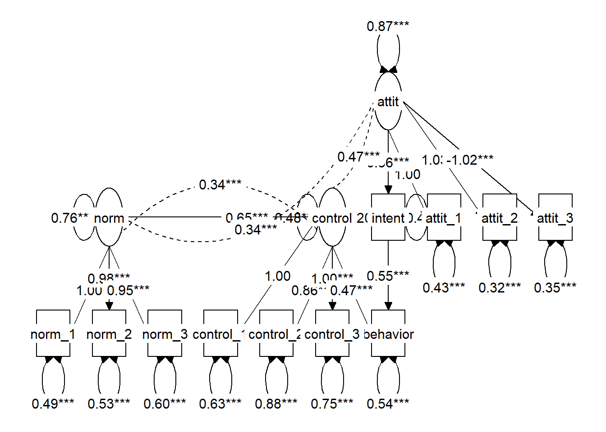
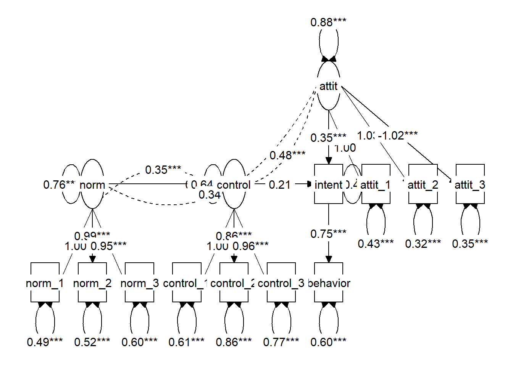

Chapter 31 Week 7 - Putting it all together
Path analysis on Theory of Reasoned Action data (file: toradata.sav)
A popular theory in psychology to explain social behavior is the Theory of Reasoned Action (TORA) of Ajzen and Fishbein (sometimes called the Ajzen-Fishbein model). This states that behavior is predicted by behavioral intention, which is in turn predicted by the attitude toward the behavior and the subjective norm about the behavior. Ajzen and Fisbein originally proposed a complex way to measure attitude and norm, but in practice researchers usually measure the attitude by including a number of attitude questions, and the norm by including a number of questions about the perceived social norms (e.g., how many of your friends would do…). The intention is usually measured by a single question on a 7 or 9-point scale and the behavior is either a dichotomous outcome (yes/no) or a frequency (how often do you…). Later, a third determinant was added, perceived behavioral control. If people feel they have little control over their behavior, this will also influence their behavior.
31.0.1 Loading the data
The TORA data are an artificial data set following results found by Reinecke (1998). The behavior under investigation is condom use by 16-24 year adolescents. The dependent variable ‘condom use’ is measured on a 5-point frequency scale (How often do you…), and the behavioral intention on a similar 5-point scale (In general do you intend to…). There are three attitude items about condom use (e.g., using a condom is awkward), three normative items (e.g., I think most of my friends would use…), and three control items (e.g., I know well how to use a condom), all measured on a 5-point Likert-type scale.
Click for explanation
df <- read.csv("TCSM_student/toradata.csv", stringsAsFactors = TRUE)31.0.2 Question 1
We have 3 indicators for attitude, norm and control, plus the variables intention and behavior. Carry out a factor analysis for the latent variables attitude, norm and control, and interpret the factor loadings of the indicators for each factor.
Click for explanation
library(lavaan)
TORA_cfa <- 'attit =~ attit_1 + attit_2 + attit_3
norm =~ norm_1 + norm_2 + norm_3
control =~ control_1 + control_2 + control_3'
fit <- cfa(TORA_cfa, data = df)
summary(fit, fit.measures=TRUE)## lavaan 0.6-9 ended normally after 29 iterations
##
## Estimator ML
## Optimization method NLMINB
## Number of model parameters 21
##
## Number of observations 250
##
## Model Test User Model:
##
## Test statistic 35.611
## Degrees of freedom 24
## P-value (Chi-square) 0.060
##
## Model Test Baseline Model:
##
## Test statistic 910.621
## Degrees of freedom 36
## P-value 0.000
##
## User Model versus Baseline Model:
##
## Comparative Fit Index (CFI) 0.987
## Tucker-Lewis Index (TLI) 0.980
##
## Loglikelihood and Information Criteria:
##
## Loglikelihood user model (H0) -2998.290
## Loglikelihood unrestricted model (H1) -2980.484
##
## Akaike (AIC) 6038.580
## Bayesian (BIC) 6112.530
## Sample-size adjusted Bayesian (BIC) 6045.959
##
## Root Mean Square Error of Approximation:
##
## RMSEA 0.044
## 90 Percent confidence interval - lower 0.000
## 90 Percent confidence interval - upper 0.073
## P-value RMSEA <= 0.05 0.599
##
## Standardized Root Mean Square Residual:
##
## SRMR 0.037
##
## Parameter Estimates:
##
## Standard errors Standard
## Information Expected
## Information saturated (h1) model Structured
##
## Latent Variables:
## Estimate Std.Err z-value P(>|z|)
## attit =~
## attit_1 1.000
## attit_2 1.036 0.068 15.308 0.000
## attit_3 -1.002 0.067 -14.856 0.000
## norm =~
## norm_1 1.000
## norm_2 1.031 0.098 10.574 0.000
## norm_3 0.932 0.093 10.013 0.000
## control =~
## control_1 1.000
## control_2 0.862 0.129 6.699 0.000
## control_3 0.968 0.133 7.290 0.000
##
## Covariances:
## Estimate Std.Err z-value P(>|z|)
## attit ~~
## norm 0.340 0.069 4.957 0.000
## control 0.475 0.073 6.468 0.000
## norm ~~
## control 0.338 0.064 5.254 0.000
##
## Variances:
## Estimate Std.Err z-value P(>|z|)
## .attit_1 0.418 0.052 8.047 0.000
## .attit_2 0.310 0.047 6.633 0.000
## .attit_3 0.369 0.049 7.577 0.000
## .norm_1 0.504 0.071 7.130 0.000
## .norm_2 0.469 0.071 6.591 0.000
## .norm_3 0.635 0.075 8.465 0.000
## .control_1 0.614 0.078 7.905 0.000
## .control_2 0.865 0.091 9.520 0.000
## .control_3 0.762 0.087 8.758 0.000
## attit 0.885 0.116 7.620 0.000
## norm 0.743 0.116 6.423 0.000
## control 0.497 0.099 5.002 0.00031.0.3 Question 2
Set up a TORA model with attitude and norms as latent variables both predicting behavorial intention, and intention predicting behavior. Analyze it. Interpret the model fit. If you find the model to fit, look at the results. How much variance does the model explain?
Click for explanation
TORA_sem <- 'attit =~ attit_1 + attit_2 + attit_3
norm =~ norm_1 + norm_2 + norm_3
intent ~ attit + norm
behavior ~ intent'
fit <- sem(TORA_sem, data = df)
summary(fit, fit.measures = TRUE, rsquare = TRUE)## lavaan 0.6-9 ended normally after 24 iterations
##
## Estimator ML
## Optimization method NLMINB
## Number of model parameters 18
##
## Number of observations 250
##
## Model Test User Model:
##
## Test statistic 27.890
## Degrees of freedom 18
## P-value (Chi-square) 0.064
##
## Model Test Baseline Model:
##
## Test statistic 1089.407
## Degrees of freedom 28
## P-value 0.000
##
## User Model versus Baseline Model:
##
## Comparative Fit Index (CFI) 0.991
## Tucker-Lewis Index (TLI) 0.986
##
## Loglikelihood and Information Criteria:
##
## Loglikelihood user model (H0) -2533.616
## Loglikelihood unrestricted model (H1) -2519.671
##
## Akaike (AIC) 5103.232
## Bayesian (BIC) 5166.618
## Sample-size adjusted Bayesian (BIC) 5109.557
##
## Root Mean Square Error of Approximation:
##
## RMSEA 0.047
## 90 Percent confidence interval - lower 0.000
## 90 Percent confidence interval - upper 0.079
## P-value RMSEA <= 0.05 0.523
##
## Standardized Root Mean Square Residual:
##
## SRMR 0.036
##
## Parameter Estimates:
##
## Standard errors Standard
## Information Expected
## Information saturated (h1) model Structured
##
## Latent Variables:
## Estimate Std.Err z-value P(>|z|)
## attit =~
## attit_1 1.000
## attit_2 1.039 0.068 15.365 0.000
## attit_3 -1.002 0.067 -14.850 0.000
## norm =~
## norm_1 1.000
## norm_2 0.983 0.087 11.333 0.000
## norm_3 0.935 0.087 10.778 0.000
##
## Regressions:
## Estimate Std.Err z-value P(>|z|)
## intent ~
## attit 0.439 0.063 6.990 0.000
## norm 0.693 0.077 8.977 0.000
## behavior ~
## intent 0.746 0.045 16.443 0.000
##
## Covariances:
## Estimate Std.Err z-value P(>|z|)
## attit ~~
## norm 0.347 0.069 5.027 0.000
##
## Variances:
## Estimate Std.Err z-value P(>|z|)
## .attit_1 0.420 0.052 8.103 0.000
## .attit_2 0.306 0.046 6.604 0.000
## .attit_3 0.372 0.049 7.651 0.000
## .norm_1 0.483 0.064 7.581 0.000
## .norm_2 0.521 0.065 7.954 0.000
## .norm_3 0.610 0.070 8.713 0.000
## .intent 0.423 0.048 8.769 0.000
## .behavior 0.603 0.054 11.180 0.000
## attit 0.884 0.116 7.614 0.000
## norm 0.765 0.113 6.767 0.000
##
## R-Square:
## Estimate
## attit_1 0.678
## attit_2 0.757
## attit_3 0.705
## norm_1 0.613
## norm_2 0.587
## norm_3 0.523
## intent 0.639
## behavior 0.52031.0.4 Question 3
Add control as a latent variable. Assume control has an effect on intention. Analyze this model and interpret the results. How much variance does the model explain?
Click for explanation
The option rsquare = TRUE tells us how much variance is explained in each dependent variable:
TORA_sem <- 'attit =~ attit_1 + attit_2 + attit_3
norm =~ norm_1 + norm_2 + norm_3
control =~ control_1 + control_2 + control_3
intent ~ attit + norm + control
behavior ~ intent'
fit <- sem(TORA_sem, data = df)
summary(fit, fit.measures = TRUE, rsquare = TRUE)## lavaan 0.6-9 ended normally after 33 iterations
##
## Estimator ML
## Optimization method NLMINB
## Number of model parameters 27
##
## Number of observations 250
##
## Model Test User Model:
##
## Test statistic 62.797
## Degrees of freedom 39
## P-value (Chi-square) 0.009
##
## Model Test Baseline Model:
##
## Test statistic 1333.695
## Degrees of freedom 55
## P-value 0.000
##
## User Model versus Baseline Model:
##
## Comparative Fit Index (CFI) 0.981
## Tucker-Lewis Index (TLI) 0.974
##
## Loglikelihood and Information Criteria:
##
## Loglikelihood user model (H0) -3558.180
## Loglikelihood unrestricted model (H1) -3526.782
##
## Akaike (AIC) 7170.360
## Bayesian (BIC) 7265.439
## Sample-size adjusted Bayesian (BIC) 7179.847
##
## Root Mean Square Error of Approximation:
##
## RMSEA 0.049
## 90 Percent confidence interval - lower 0.025
## 90 Percent confidence interval - upper 0.071
## P-value RMSEA <= 0.05 0.492
##
## Standardized Root Mean Square Residual:
##
## SRMR 0.043
##
## Parameter Estimates:
##
## Standard errors Standard
## Information Expected
## Information saturated (h1) model Structured
##
## Latent Variables:
## Estimate Std.Err z-value P(>|z|)
## attit =~
## attit_1 1.000
## attit_2 1.033 0.068 15.295 0.000
## attit_3 -1.018 0.068 -15.087 0.000
## norm =~
## norm_1 1.000
## norm_2 0.985 0.087 11.305 0.000
## norm_3 0.947 0.087 10.845 0.000
## control =~
## control_1 1.000
## control_2 0.864 0.126 6.855 0.000
## control_3 0.958 0.129 7.417 0.000
##
## Regressions:
## Estimate Std.Err z-value P(>|z|)
## intent ~
## attit 0.352 0.096 3.669 0.000
## norm 0.644 0.088 7.347 0.000
## control 0.207 0.163 1.268 0.205
## behavior ~
## intent 0.746 0.045 16.443 0.000
##
## Covariances:
## Estimate Std.Err z-value P(>|z|)
## attit ~~
## norm 0.345 0.069 5.023 0.000
## control 0.476 0.073 6.513 0.000
## norm ~~
## control 0.346 0.065 5.361 0.000
##
## Variances:
## Estimate Std.Err z-value P(>|z|)
## .attit_1 0.427 0.051 8.295 0.000
## .attit_2 0.325 0.046 7.101 0.000
## .attit_3 0.349 0.047 7.477 0.000
## .norm_1 0.490 0.064 7.702 0.000
## .norm_2 0.524 0.065 8.025 0.000
## .norm_3 0.600 0.069 8.652 0.000
## .control_1 0.610 0.076 8.015 0.000
## .control_2 0.861 0.090 9.580 0.000
## .control_3 0.769 0.086 8.938 0.000
## .intent 0.412 0.046 8.890 0.000
## .behavior 0.603 0.054 11.180 0.000
## attit 0.877 0.115 7.596 0.000
## norm 0.757 0.112 6.733 0.000
## control 0.500 0.098 5.076 0.000
##
## R-Square:
## Estimate
## attit_1 0.673
## attit_2 0.742
## attit_3 0.723
## norm_1 0.607
## norm_2 0.584
## norm_3 0.531
## control_1 0.450
## control_2 0.303
## control_3 0.374
## intent 0.649
## behavior 0.52031.0.5 Question 4
The TORA model forbids direct paths between attitude and norm and actual behavior; the effect should be mediated totally by the behavioral intention. The effect of control can be either direct or indirect; the TORA does not specify which. Test a model with both a direct and indirect effect of control on TORA and decide whether you want to keep or remove them. Decide which model you accept as the best model for these data, and explain how you decided to keep this model.
Click for explanation
TORA_dir <- 'attit =~ attit_1 + attit_2 + attit_3
norm =~ norm_1 + norm_2 + norm_3
control =~ control_1 + control_2 + control_3
intent ~ attit + norm + control
behavior ~ intent + control'
TORA_ind <- 'attit =~ attit_1 + attit_2 + attit_3
norm =~ norm_1 + norm_2 + norm_3
control =~ control_1 + control_2 + control_3
intent ~ attit + norm + control
behavior ~ intent'
fit_dir <- sem(TORA_dir, data = df)
fit_ind <- sem(TORA_ind, data = df)To compare the models, we can use a \(\chi^2\)-difference test, using the anova() function or `semTools::compareFits:
anova(fit_dir, fit_ind)library(semTools)
compareFit(Direct = fit_dir, Indirect = fit_ind)## The following lavaan models were compared:
## Direct
## Indirect
## To view results, assign the compareFit() output to an object and use the summary() method; see the class?FitDiff help page.31.0.6 Question 5
Use tidySEM::graph_sem() to plot both models, and check whether the picture corresponds with theory and with the way you intended to specify the model.
Click for explanation
library(tidySEM)
graph_sem(fit_dir)
graph_sem(fit_ind)
31.0.7 Question 6
Before you learned about latent variables, you might have analyzed these data by computing sum or mean scores for attitude, norms, and control, and using these as observed variables in a path model. It is possible to obtain mean scale scores using tidySEM, as follows:
library(dplyr)
df[,c(2:7, 10:12)] %>%
tidy_sem() %>%
create_scales() -> scalesThe scales object contains a table with scale descriptive statistics:
scales$descriptivesUse the mean scores of the variables to set up a TORA model, and compare the results with the previous analysis. Which model would you prefer, and why?
Hint: Use cbind() to add the scale scores to df
Click for explanation
library(dplyr)
names(df)## [1] "respnr" "attit_1" "attit_2" "attit_3" "norm_1" "norm_2"
## [7] "norm_3" "intent" "behavior" "control_1" "control_2" "control_3"
## [13] "sex"df %>%
tidy_sem() %>%
tidySEM::create_scales() -> scales
df_obs <- cbind(df, scales$scores)
TORA_obs <- 'intent ~ attit + norm + control
behavior ~ intent'
fit_obs <- sem(TORA_obs, df_obs)The fit of this new model is worse than the model that included latent variables. However, note that these models are not nested, so we cannot directly compare fit indices. They are estimated on different variables. We will get a warning to emphasize this point. We can only interpret the Model Fit Indices table, and the Differences in Fit Indices, but not the Nested Model Comparison.
compareFit(Latent = fit_dir,
Observed = fit_obs)## The following lavaan models were compared:
## Observed
## Latent
## To view results, assign the compareFit() output to an object and use the summary() method; see the class?FitDiff help page.We can also inspect the regression coefficients in both models:
table_results(fit_dir) %>%
filter(grepl("ON", label))table_results(fit_obs) %>%
filter(grepl("ON", label))31.0.8 Moderated mediation
We now want to investigate whether the Theory of Reasoned Action for condom use is different for boys and girls. This is a typical case of a moderated mediation model.
31.0.9 Question 7
Estimate the sex moderated model. What happened to the fit of the model when you compare it to your earlier model that didn’t include sex?
Click for explanation
fit_mod <- sem(TORA_sem, data = df, group = "sex")
summary(fit_mod, fit.measures = TRUE)## lavaan 0.6-9 ended normally after 71 iterations
##
## Estimator ML
## Optimization method NLMINB
## Number of model parameters 76
##
## Number of observations per group:
## woman 161
## man 89
##
## Model Test User Model:
##
## Test statistic 134.940
## Degrees of freedom 78
## P-value (Chi-square) 0.000
## Test statistic for each group:
## woman 91.538
## man 43.402
##
## Model Test Baseline Model:
##
## Test statistic 1378.913
## Degrees of freedom 110
## P-value 0.000
##
## User Model versus Baseline Model:
##
## Comparative Fit Index (CFI) 0.955
## Tucker-Lewis Index (TLI) 0.937
##
## Loglikelihood and Information Criteria:
##
## Loglikelihood user model (H0) -3467.397
## Loglikelihood unrestricted model (H1) -3399.927
##
## Akaike (AIC) 7086.794
## Bayesian (BIC) 7354.425
## Sample-size adjusted Bayesian (BIC) 7113.498
##
## Root Mean Square Error of Approximation:
##
## RMSEA 0.076
## 90 Percent confidence interval - lower 0.054
## 90 Percent confidence interval - upper 0.098
## P-value RMSEA <= 0.05 0.028
##
## Standardized Root Mean Square Residual:
##
## SRMR 0.054
##
## Parameter Estimates:
##
## Standard errors Standard
## Information Expected
## Information saturated (h1) model Structured
##
##
## Group 1 [woman]:
##
## Latent Variables:
## Estimate Std.Err z-value P(>|z|)
## attit =~
## attit_1 1.000
## attit_2 0.992 0.076 13.026 0.000
## attit_3 -1.003 0.076 -13.213 0.000
## norm =~
## norm_1 1.000
## norm_2 0.944 0.098 9.674 0.000
## norm_3 0.915 0.099 9.222 0.000
## control =~
## control_1 1.000
## control_2 0.819 0.143 5.727 0.000
## control_3 0.968 0.148 6.536 0.000
##
## Regressions:
## Estimate Std.Err z-value P(>|z|)
## intent ~
## attit 0.389 0.105 3.695 0.000
## norm 0.536 0.119 4.495 0.000
## control 0.116 0.185 0.630 0.529
## behavior ~
## intent 0.744 0.054 13.665 0.000
##
## Covariances:
## Estimate Std.Err z-value P(>|z|)
## attit ~~
## norm 0.439 0.085 5.164 0.000
## control 0.470 0.089 5.292 0.000
## norm ~~
## control 0.387 0.078 4.958 0.000
##
## Intercepts:
## Estimate Std.Err z-value P(>|z|)
## .attit_1 2.839 0.090 31.702 0.000
## .attit_2 2.907 0.084 34.728 0.000
## .attit_3 3.174 0.084 37.969 0.000
## .norm_1 2.832 0.080 35.342 0.000
## .norm_2 2.832 0.079 35.775 0.000
## .norm_3 2.795 0.081 34.694 0.000
## .control_1 2.851 0.082 34.755 0.000
## .control_2 2.857 0.081 35.104 0.000
## .control_3 2.888 0.081 35.877 0.000
## .intent 2.677 0.078 34.159 0.000
## .behavior 0.536 0.155 3.448 0.001
## attit 0.000
## norm 0.000
## control 0.000
##
## Variances:
## Estimate Std.Err z-value P(>|z|)
## .attit_1 0.415 0.059 6.986 0.000
## .attit_2 0.267 0.046 5.862 0.000
## .attit_3 0.245 0.044 5.523 0.000
## .norm_1 0.360 0.061 5.874 0.000
## .norm_2 0.408 0.062 6.539 0.000
## .norm_3 0.481 0.068 7.049 0.000
## .control_1 0.587 0.089 6.608 0.000
## .control_2 0.733 0.095 7.746 0.000
## .control_3 0.578 0.086 6.729 0.000
## .intent 0.382 0.050 7.716 0.000
## .behavior 0.472 0.053 8.972 0.000
## attit 0.875 0.141 6.199 0.000
## norm 0.674 0.118 5.737 0.000
## control 0.497 0.118 4.212 0.000
##
##
## Group 2 [man]:
##
## Latent Variables:
## Estimate Std.Err z-value P(>|z|)
## attit =~
## attit_1 1.000
## attit_2 1.200 0.147 8.137 0.000
## attit_3 -1.043 0.141 -7.375 0.000
## norm =~
## norm_1 1.000
## norm_2 0.931 0.160 5.829 0.000
## norm_3 0.879 0.158 5.571 0.000
## control =~
## control_1 1.000
## control_2 0.914 0.267 3.430 0.001
## control_3 0.960 0.271 3.546 0.000
##
## Regressions:
## Estimate Std.Err z-value P(>|z|)
## intent ~
## attit 0.380 0.183 2.072 0.038
## norm 0.666 0.135 4.924 0.000
## control 0.299 0.299 0.999 0.318
## behavior ~
## intent 0.453 0.065 6.990 0.000
##
## Covariances:
## Estimate Std.Err z-value P(>|z|)
## attit ~~
## norm 0.080 0.108 0.741 0.459
## control 0.389 0.112 3.474 0.001
## norm ~~
## control 0.219 0.108 2.037 0.042
##
## Intercepts:
## Estimate Std.Err z-value P(>|z|)
## .attit_1 3.270 0.117 28.063 0.000
## .attit_2 3.180 0.128 24.905 0.000
## .attit_3 2.787 0.126 22.187 0.000
## .norm_1 3.236 0.131 24.692 0.000
## .norm_2 3.337 0.132 25.293 0.000
## .norm_3 3.303 0.131 25.136 0.000
## .control_1 3.157 0.111 28.415 0.000
## .control_2 3.135 0.129 24.249 0.000
## .control_3 3.213 0.130 24.805 0.000
## .intent 3.427 0.113 30.233 0.000
## .behavior 2.234 0.233 9.600 0.000
## attit 0.000
## norm 0.000
## control 0.000
##
## Variances:
## Estimate Std.Err z-value P(>|z|)
## .attit_1 0.449 0.093 4.844 0.000
## .attit_2 0.357 0.103 3.480 0.001
## .attit_3 0.578 0.112 5.160 0.000
## .norm_1 0.640 0.145 4.402 0.000
## .norm_2 0.779 0.154 5.062 0.000
## .norm_3 0.851 0.158 5.373 0.000
## .control_1 0.658 0.142 4.618 0.000
## .control_2 1.119 0.195 5.724 0.000
## .control_3 1.087 0.194 5.587 0.000
## .intent 0.383 0.084 4.546 0.000
## .behavior 0.428 0.064 6.671 0.000
## attit 0.759 0.180 4.223 0.000
## norm 0.889 0.235 3.781 0.000
## control 0.441 0.167 2.639 0.00831.0.10 Measurement invariance
Before conducting this analysis, you should check for measurement invariance. There are different ‘levels’ of measurement invariance:
- Configural: The same model in both groups
- Metric: Same factor loadings
- Scalar: Same factor loadings, and intercepts for the indicators.
We can specify these models with groups.equal constraints and then use compareFit():
library(semTools)
fit.config <- cfa(TORA_cfa, data = df, group = "sex")
fit.metric <- cfa(TORA_cfa, data = df, group = "sex",
group.equal = "loadings")
fit.scalar <- cfa(TORA_cfa, data = df, group = "sex",
group.equal = c("loadings", "intercepts"))
compareFit(Configural = fit.config,
Metric = fit.metric,
Scalar = fit.scalar)## The following lavaan models were compared:
## Configural
## Metric
## Scalar
## To view results, assign the compareFit() output to an object and use the summary() method; see the class?FitDiff help page.You can see that imposing increasingly strict constraints does not significantly deteriorate the fit. So, scalar measurement invariance is supported.
31.0.11 Question 8
Going back to the multi-group model, impose scalar invariance, and then determine whether it makes sense to constrain all the regression coefficients to be equal. Does it?
Click for explanation
fit_mod_invar <- sem(TORA_sem, data = df,
group = "sex",
group.equal = c("loadings", "intercepts"))
fit_mod_invar_reg <- sem(TORA_sem, data = df,
group = "sex",
group.equal = c("loadings", "intercepts", "regressions"))
compareFit(Multigroup = fit_mod_invar,
Constrain_regressions = fit_mod_invar_reg)## The following lavaan models were compared:
## Multigroup
## Constrain_regressions
## To view results, assign the compareFit() output to an object and use the summary() method; see the class?FitDiff help page.31.0.12 Question 9
Depending on your answer to the previous question, investigate which regression coefficients of the TORA-model is the same or different for boys and girls. Decide on a final model and report how you choose your model.
With such a model, there are many ways to interpret the results. For example, you can look at the direct effects, indirect effects, explained variance, etc. Look at your final model and report on what you think are the most interesting results.